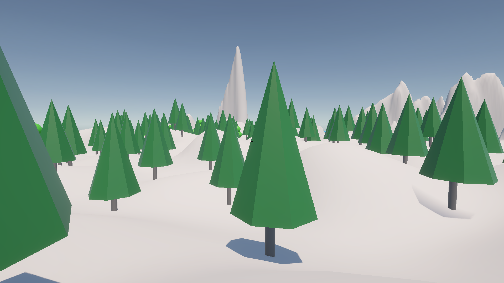
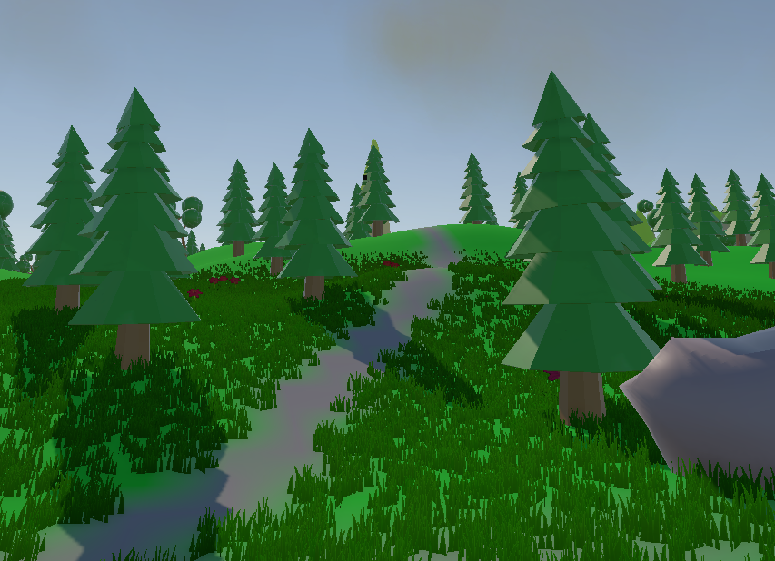
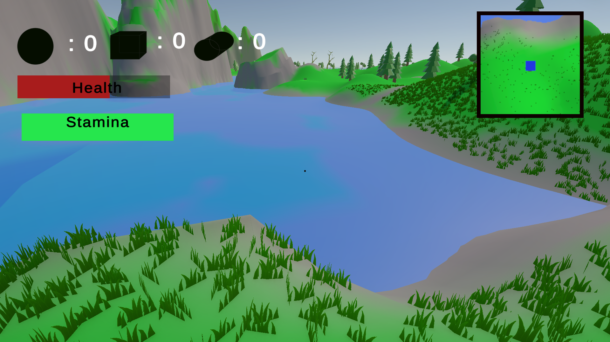
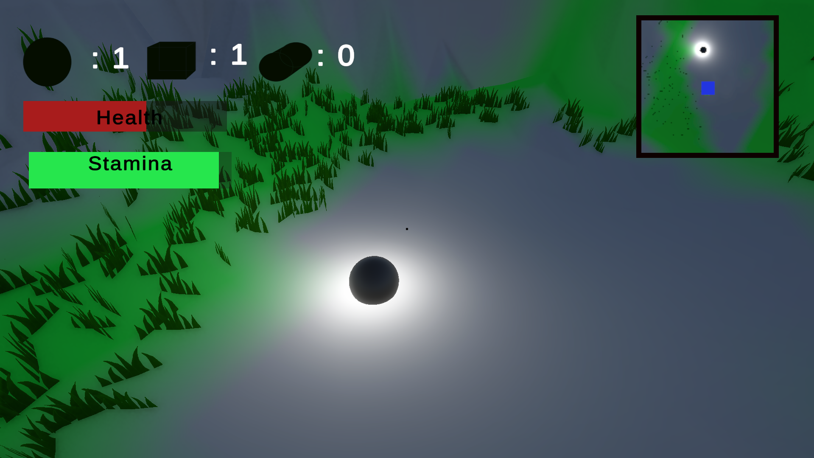
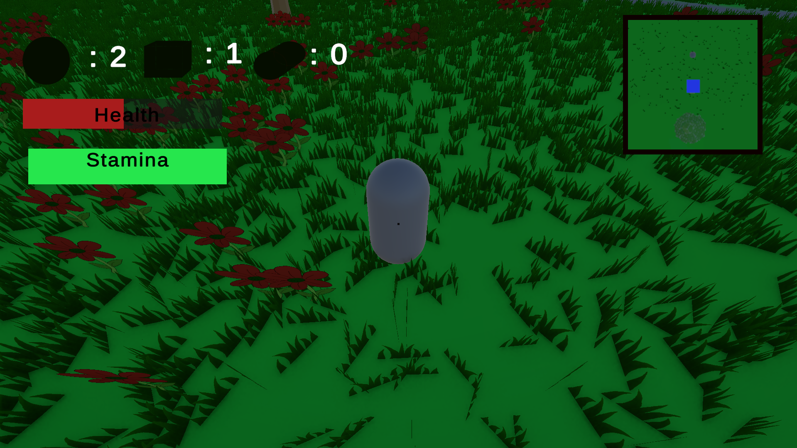

Back Home
Project Information
GitHub Link: https://github.com/KopanoCHV/GameD_3D.git
Role: Environment designer and Partialy Backend developer
Timeline: 17 July 2025 - 10 November 2025
Project Overview
The aim of this project was to develop a 3D first-person game using Unity Hub. The game was supposed to include all assets, with all the game assets developed using Blender. It was also required to have an NPC or Enemy character that impacts gameplay. We also had to ensure that the gameplay loop is engaging and intuitive, providing a seamless and enjoyable experience for players. The game needed to have features like:
- Detailed Models;
- Texture;
- Animation;
- Lighting;
- UI;
- Audio;
- Particle Effects;
- Narration;
- Level Design;
Technologies used for the project include:
- Unity Hub;
- C-sharp;
- Blender;
- Krita;
- Visual Studio Code Editor;
Storyline:
This game is about an alien that crashed its ship on earth. The players plays as the alien, with a goal of finding all scatered pieces of the ship so that it can fix it and go back home. But as the player searches for the pieces, there is a creature they need to avoid that wants to kill them. So the character needs to find all the spaceship pieces without being killed by the creature.
Implementation process
Since I was responsible for the Environmental design and some backend functionalities (like health system, damage systems, enemy movement and enemy attack, Item collection system and other basic functionalities), I first started with making sure that I finish the environment before contineuing with other parts of the game. The environment had few tasks which include:
- Land Scape;
- Trees;
- Grass and flowers;
- Water;
- Clouds;
- Day / Night System;
When implementing these features, different tools were used. But after the implementation, all the products were brought back to Unity Hub to add them to the game.
Brakedown:
1. Land Scape
For the game land scape, unity terrain built-in tool was used to implement the shape of the land scape. This tool gives the user the ability to shape the land scape by setting the height and depth of the ground on different sections of the terrain, making it look realistic. This was all that was needed when it came to setting up the shape of the Land Scape. The land scape was supposed to have mountains so that it looks like real land forms, but at the same time the land scape had to have paths where the character can walk on instead of having to walking on mountains every time. So, these parts were made to be smooth compared to the mountain parts.

2. Trees

3. Grass and Flowers
When the grass and flowers were implemented, an external tool called Krita was used. This tool was used to draw the textures of the plants (grass and flowers), after that they were exported from the software and imported into to Unity Hub as texters and were used as grass and flowers on the terrains. To paint the textures on the land scape, a built-in tool called texture brash was used to paint the grass and flower textures individualy on the land scape. This tool makes it a lot easier to paint the textures, instead of placing the textures one by one. The user can control the area the brush covers to speed up the process.
4. Water
To implement water, Unity shaders were used on a plane to make the plane have waves, simulating real water. And to make the plane to simiulate water perfectly, the plane was made to change colors, looking like how water would look when reflecting the sun light. And after working on the looks and animation (waves) of the water, some functionalities were added to the water. Since the character of the game is an alien, it was made that when the character touches the water it starts losing health. This will be explained more in sections to come.

5. Clouds
The clouds were also implemented using one of unity's built-in tools. For cloud, a particle effect tool was used. But in order to make the clouds using this tool, first a cloud texture had to be created using Krita. After the texture was complete, it was then imported into Unity Hub and used in the Unity Particle system tool. Then after this, all that was left to do was to set the dimensions of the area that the clouds should cover. The particle system handles animation automatically, all that was needed was to set the animation speed and after that the clouds were complete.
After the environment was finished, then I started working on game systems that make up gameplay. These systems include:
- Character health system;
- Collection system;
- Water damage system;
- Stamina system;
- Enemy attack system;
Brakedown:
1. Character health system
This game uses a Health Bar System instead of lives. The health bar is reduced when the character is attacked by the enemy (creature) or when the character touches water. If the health bar goes down to zero, the player starts from the beginning with the items collected starting from zero again. The character's health can also decrease when the player attempts to run when the stamina bar is depleted. The reason for this is to stop players from trying to over use the sprinting mechanic by always holding the sprint button even when the sprint bar is empty.
2. Collection system
For the collection system, before the logic of the system was implemented I first needed to have the items (spaceship parts) that the character needs to collect. But to keep things simple, I used different 3D shapes found in unity to represent different parts, and made them have different colors that make them not too difficult to sport. And to also give them value, the parts where made to glow with every part having a different glow color. For the logic, it was made that when the player picks up the parts, they just walk through them, then the part disappears. After the part is collected, a UI that shows the number of parts collected updates. The UI separates the parts by shape, next to the shape that represents a certain part, there is a number that shows the number of that type of part was collected. When all the parts are collected, a win screen is then triggered.

3. Water Damage system
Since the character is an alien, we made it that when the character touches water they should lose health to add on to the story line of the game. How this was made, the water plane was set to istrigger, which makes the plane allow the character to walk through it (do not collide with anything). And the code checked if an a object with a tag "Player" is walking through it. If so, the player will lose health until they are not interacting with the plane anymore. The reason why the script checks for an object with a player tag, is to prevent the player losing health even when the enemy touches water but the player is not.
4. Stamina system
Just like the health system, the stamina system uses a starmina bar to show the player the amount of stamina they have left. The stamina is used up only when the character sprints. And if the player still attempts to sprint even when the stamina bar is empty, the characters health will start decreasing. The reason for that system is to prevent players form abusing the use of the sprint mechanic.
5. Enemy attack system

Challenges
In the process of devloping this project, there were a few features that were not implemented how we planned at the beginning of the project or were not implemeted completely. These sections are explained below.
1. Enemy Model
The model for the enemy was supposed to be a wolf with walking and running animations. But due to group work challenges, the member who was supposed to work on the model and animation did not hand over the asset at the end of the project time line. This forced us to hand over the project with the enemy having only its functionalities (chasing and decreasing health).
2. Character animations
For the character, the character had to be modelled in blender and also have animations for walking and running to improve gameplay expirience and to meet the project requirements. The character model was implemeted, but took more time than expected. This resulted in not having enough time to work on the animations for the character since they also took time and had alot of bugs when they were implemented. Due to this, we were forced to just export the model alone from blender without the animations since they did not work as intended. And the model was imported in Unity without the animations and added to the game.
3. Water damage
At first, it was planned that the character should lose health as long as they are in contact with the water. But when the code for the logic was implemented, for some unknown reasons the character only lost health when they came in contact with the liquid, but after that when the character remain inside the liquid (still in contact with the water) they did not lose health anymore unless the jumped while they were still inside the water.

4. Force Damage
Since the game has mountains, it made sense to make the character lose health if the jump from high grounds to the lower ground due to the landing force. But when we tried to implement the logic for this functionality, we had issues of not being able to get the force the player land with, so that we can implement a boundary force value that determines if the player should lose health or not after landing.